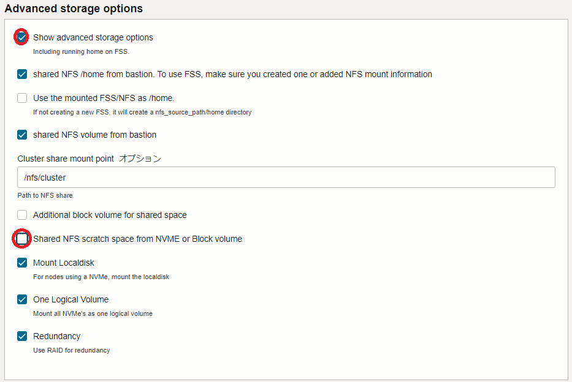
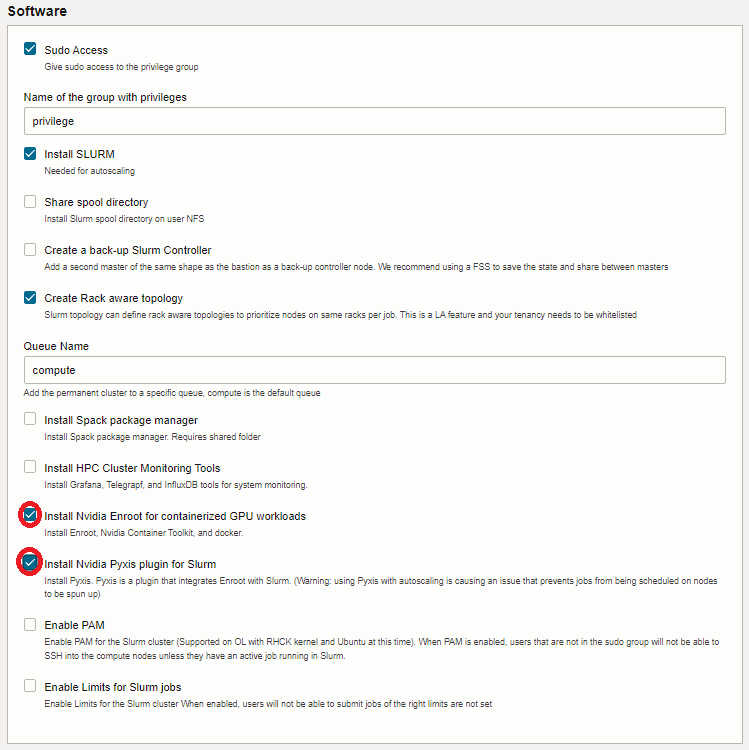
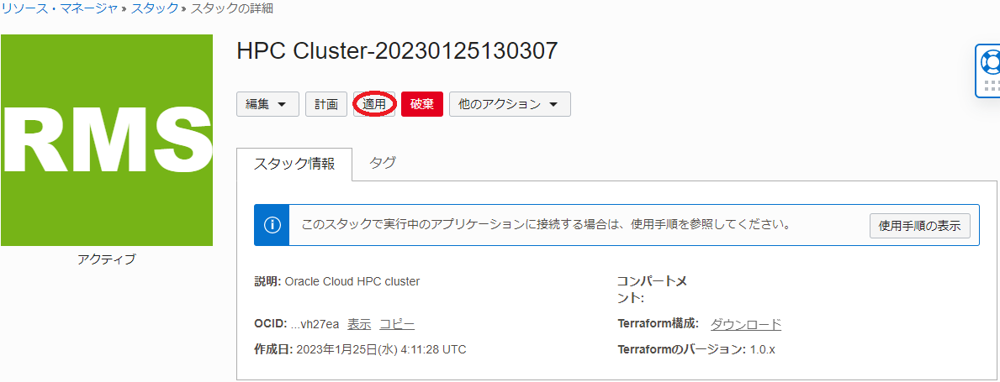

Oracle Cloud Infrastructure（以降OCIと記載）は、8枚の NVIDIA A100 40/80 GBと総帯域幅1.6 Tbps（100 Gbps x 16）のRDMA対応ネットワークインタフェースを搭載するベアメタルGPUシェイプ BM.GPU4.8/BM.GPU.GM4.8 とこれらを接続する クラスタ・ネットワーク を提供しており、1ノードには搭載しきれない多数のGPUを必要とする大規模なAIや機械学習のワークロードを実行するGPUクラスタを構築するには最適なクラウドサービスです。
このチュートリアルは、 マーケットプレイス から無償で利用可能な HPCクラスタスタック を利用し、以下構成のオンデマンドGPUクラスタを構築します。
- NVIDIA A100 40 GBを8枚搭載するGPUノード（ BM.GPU4.8 ）
- インターコネクト: クラスタ・ネットワーク （ノード当たり100 Gbps x 16）
- インターネットからSSH接続可能なBastionノード
- OS: Oracle Linux 7.9
- コンテナランタイム: Enroot
- ジョブスケジューラ: Slurm + Pyxis
- オンデマンドクラスタ機能： クラスタオートスケーリング
- ファイル・ストレージ によるGPUクラスタ内ホームディレクトリ共有
- LDAPによるクラスタ内ユーザ統合管理
またこのチュートリアルは、デプロイしたGPUクラスタで複数ノードに跨るGPU間の通信性能を NCCL（NVIDIA Collective Communication Library） の通信性能計測プログラム（ NCCL Tests ）で検証後、分散機械学習のサンプルプログラムを実行します。
GPUクラスタのワークロード実行環境は、機械学習環境のデファクトスタンダードである Dokcer コンテナを利用し、コンテナランタイムに Enroot 、ジョブスケジューラに Slurm を採用し、コンテナの操作（インポート・起動・終了等）をジョブスケジューラからコンテナランタイムに指示する Slurm のプラグイン Pyxis を使用します。
また、コンテナ環境からGPUやNICをRDMAで利用可能とする NVIDIA Container Toolkit を含むソフトウェア群もインストールされ、ノードを跨ぐGPU間通信を高帯域・低遅延でコンテナ上から実行することが可能です。この通信性能詳細は、 3-0. 概要 を参照ください。
オンデマンドGPUクラスタにおけるワークロード実行は、 Slurm にジョブを投入することで行い、 クラスタオートスケーリング がジョブ実行に必要なGPUノードを クラスタ・ネットワーク と共に動的に起動、 Slurm が Pyxis を介してこれらGPUノード上に指定のコンテナを起動、ジョブ終了後にコンテナを終了します。
また クラスタオートスケーリング は、ジョブが実行されない状態が一定時間経過すると、自動的にGPUノードを削除します。
本チュートリアルで使用する HPCクラスタスタック は、通常であれば数日かかる構築作業を、OCIコンソールのGUIから10項目程度のメニューを選択した後、1クリックで自動的に実施することを可能とします。
所要時間 : 約3時間
前提条件 : オンデマンドGPUクラスタを収容するコンパートメント(ルート・コンパートメントでもOKです)が作成されていること。
注意 : チュートリアル内の画面ショットについては、OCIの現在のコンソール画面と異なっている場合があります。また使用する HPCクラスタスタック のバージョンが異なる場合も、チュートリアル内の画面ショットが異なる場合があります。
1. HPCクラスタスタック
1-0. 概要
本チュートリアルで使用する HPCクラスタスタック は、大きく2つのステップに分けて構築を実施しており、前半は Terraform によるOCIリソース構築フェーズで、後半は Terraform から起動される Ansible が行うOSレベルのカスタマイズフェーズです。
具体的には、以下のような処理が行われます。
［ Terraform によるOCIリソース構築フェーズ］
- VCN と関連するネットワークリソース構築
- クラスタ・ネットワーク と関連リソース構築
- Bastionノードインスタンス構築
- ファイル・ストレージ 構築
- Ansible 関連ソフトウェアインストール
[ Ansible によるOSレベルカスタマイズフェーズ]
- NFSファイル共有環境構築
- LDAPユーザ統合環境構築
- Slurm 環境構築
- クラスタオートスケーリング ツール群インストール
また クラスタオートスケーリング は、Bastionノードから Terraform CLIを使用して動的にGPUクラスタを構築するため、 インスタンス・プリンシパル 認証の設定を予め行います。
以上より本章では、以下の手順でGPUクラスタ構築のための スタック を作成します。
- インスタンス・プリンシパル 認証関連設定
- スタックの作成
- スタックの計画
- スタックの適用
1-1. インスタンス・プリンシパル認証関連設定
本章は、Bastionノードから Terraform CLIを使用して動的にGPUクラスタを構築するための インスタンス・プリンシパル 認証関連設定を行います。
インスタンス・プリンシパル 認証の設定は、 OCI HPCテクニカルTips集 の オンデマンドクラスタ実現のためのインスタンス・プリンシパル認証設定方法 の ここ の手順に従います。
この際、 動的グループ に含めるインスタンスは、Bastionノードとします。
1-2. スタックの作成
本章は、 HPCクラスタスタック を元に、前述の環境構築のための スタック を作成します。このチュートリアルで使用する HPCクラスタスタック は、バージョン 2.10.2.1 です。
-
以下 マーケットプレイス の HPCクラスタスタック のページにアクセスします。
-
OCIコンソールへのログイン画面が表示された場合（まだログインしていない場合）、ログインを完了します。
-
表示される以下画面の右上で、 スタック をデプロイするリージョンを選択し、使用許諾 チェックボックスをチェックし、 スタックの起動 ボタンをクリックします。
- 表示される以下 スタック情報 画面で、以下の情報を入力し、下部の 次 ボタンをクリックします。
- 名前 : スタック に付与する名前（任意）
- 説明 : スタック に付与する説明（任意）
- コンパートメントに作成 : スタック を作成するコンパートメント(※1)
※1) OCIコンソールで最後に使用していたコンパートメントが引き継がれるため、意図したコンパートメントでない場合は、 HPCクラスタスタック ページにアクセスする前に、予め所望のコンパートメントを選択しておきます。
-
表示される 変数の構成 画面で、各画面フィールドに以下の情報を入力し、下部の 次 ボタンをクリックします。なお、ここに記載のないフィールドは、デフォルトのままとします。
5.1 Cluster configuration フィールド
- Public SSH key : （Bastionノードにログインする際使用するSSH秘密鍵に対応する公開鍵）
- 公開鍵ファイルのアップロード（ SSHキー・ファイルの選択 ）と公開鍵のフィールドへの貼り付け（ SSHキーの貼付け ）が選択可能

5.2 Headnode options フィールド
- Availability Domain : （Bastionノードをデプロイする可用性ドメイン）

5.3 Compute node options フィールド
- Availability Domain : （GPUノードをデプロイする可用性ドメイン）
- Shape of the Compute Nodes : BM.GPU4.8 （GPUノードに使用するシェイプ）
- Initial cluster size : 0 (※2)
- Size of the boot volume in GB : 200（GPUノードのブート・ボリュームサイズ）
- Image version : GPU（GPUノードのイメージ）
※2) このフィールドは、スタティックに常時起動しておくGPUノードのノード数を指定しますが、本チュートリアルはオンデマンドでのみGPUノードをデプロイするため、このフィールドを0とします。
5.4 Additional Login Node フィールド
- Login Node : チェックオフ（※3）
※3) Bastionノードに追加してログインノードをデプロイするかの指定で、本チュートリアルではデプロイしません。
5.5 Autoscaling フィールド
- Scheduler based autoscaling : チェック
5.6 API authencication, needed for autoscaling フィールド
- Use Instance Princopal instead of configuration file : チェックオフ
- API User OCID : ユーザOCID（※4）
- API fingerprint : APIキー のフィンガープリント（※5）
- API private key : APIキー の秘密鍵（ 参照 ボタンをクリックしてアップロード）（※6）
※4) ユーザOCIDの確認は、 ここ の手順を参照して下さい。
※5) APIキーの作成・登録 で作成した APIキー のフィンガープリント
※6) APIキーの作成・登録 で作成した APIキー の秘密鍵5.7 Additional file system フィールド
- Add another NFS filesystem : チェック
- Create FSS : チェック
- NFS Path : /mnt/home（※7）
- NFS server Path : /mnt/home（※7）
※7) ここで指定するパスは、ファイル・ストレージ領域に作成するLDAPユーザのホームディレクトリを格納するディレクトリを指定しています。よって、ユーザ名user_nameのLDAPユーザのホームディレクトリは、/mnt/home/user_nameとなります。

5.8 Advanced storage options フィールド
- Show advanced storage options : チェック
- Shared NFS scratch space from NVME or Block volume : チェックオフ（※8）
※8) GPUノードの NVMe SSD ローカルディスク領域をNFS共有するかの指定で、本チュートリアルでは共有しません。

5.9 Software フィールド
- Install Nvidia Enroot for containerized GPU workloads : チェック
- Install Nvidia Pyxis plugin for Slurm : チェック

- Public SSH key : （Bastionノードにログインする際使用するSSH秘密鍵に対応する公開鍵）
-
表示される 確認 画面で、これまでの設定項目が意図したものになっているかを確認し、以下 作成されたスタックで適用を実行しますか。 フィールドの 適用の実行 をチェックオフし、下部の 作成 ボタンをクリックします。

ここで 適用の実行 をチェックした場合、 作成 ボタンのクリックと同時にスタックの適用が開始され、オンデマンドGPUクラスタのデプロイが始まりますが、このチュートリアルでは スタック の計画を実行してから適用を行います。
これで、以下画面のとおりオンデマンドGPUクラスタを構築する スタック が作成されました。

1-3. スタックの計画
本章は、完成した スタック を計画し、どのようなリソースがデプロイされるか確認します。
-
作成したスタックの以下 スタックの詳細 画面で、 計画 ボタンをクリックします。
-
表示される以下 計画 サイドバーで、 計画 ボタンをクリックします。

-
表示される以下 ジョブの詳細 ウィンドウで、左上のステータスが 受入れ済 → 進行中 → 成功 と遷移すれば、 スタック の計画が終了しています。

表示される以下 ログ フィールドで、適用時にデプロイされるリソースを確認します。

1-4. スタックの適用
本章は、計画で作成されるリソースに問題が無いことを確認した スタック に対し、適用を行いオンデマンドGPUクラスタをデプロイします。
-
以下 スタックの詳細 画面で、 適用 ボタンをクリックします。

-
表示される以下 適用 サイドバーで、 適用 ボタンをクリックします。

-
表示される以下 ジョブ詳細 ウィンドウで、左上のステータスが 受入れ済 → 進行中 と遷移すれば、 スタック の適用が実施されています。
表示される以下 ログ フィールドで、リソースのデプロイ状況を確認します。
この適用が完了するまでの所要時間は、15分程度です。
ステータスが 成功 となれば、オンデマンドGPUクラスタのデプロイが完了しています。
2. Bastionノード確認・設定変更
本章は、デプロイされたBastionノードにログインし、環境の確認とジョブスケジューラの設定を一部変更します。
-
Bastionノードログイン
Bastionノードへのログインは、 スタック 適用時の以下 ログ フィールドの最後に表示されているBastionノードのIPアドレスを使用し、インターネットを介してopcユーザでSSHログインします。
このSSH接続では、 スタック に指定したSSH公開鍵に対応する秘密鍵を使用します。
$ ssh -i path_to_ssh_secret_key opc@123.456.789.123 -
Bastionノードファイルシステム確認
Bastionノードは、以下のようにファイル・ストレージの/mnt/homeがマウントされています。この/mnt/homeは、オンデマンドGPUクラスタ内で共有するLDAPユーザのホームディレクトリに使用します。
$ df -h /mnt/home Filesystem Size Used Avail Use% Mounted on FSS_ip:/mnt/home 8.0E 0 8.0E 0% /mnt/home -
Slurm 設定変更
Pxys を介して Slurm から Enroot 上のコンテナを利用する場合、デフォルトの挙動はジョブ終了後にインポートしたコンテナを削除します。
ジョブ終了後もコンテナを保持するため、Bastionノードで以下のように Slurm の設定ファイルを修正します。$ diff /etc/slurm/plugstack.conf_org /etc/slurm/plugstack.conf 1c1 < required /usr/local/lib/slurm/spank_pyxis.so --- > required /usr/local/lib/slurm/spank_pyxis.so container_scope=global次に、この設定変更を反映するため、Bastionノードのopcユーザで以下コマンドを実行し、 Slurm を再起動します。
$ sudo systemctl restart slurmctld slurmdbd
3. LDAPユーザ作成・確認
本章は、 HPCクラスタスタック が作成したLDAP統合ユーザ管理環境にLDAPユーザを作成し、このユーザでインターネットからBastionノードにSSHログイン出来ることを確認します。
このLDAP統合ユーザ管理環境は、BastionノードがLDAPサーバ兼クライアントでGPUノードがLDAPクライアントです。
-
LDAPユーザ作成
LDAPサーバであるBastionノードは、LDAPユーザ管理のためのclusterコマンドが用意されています。
このコマンドは、作成するユーザのホームディレクトリを/home以下とするため、本環境のLDAPユーザ用ホームディレクトリである ファイル・ストレージ の/mnt/home以下に作成するよう修正する必要があります。このため、以下コマンドをBastionノードのopcユーザで実行します。
$ sudo sed -i 's/\/home\//\/mnt\/home\//g' /usr/bin/cluster次に、以下コマンドをBastionノードのopcユーザで実行し、イニシャルグループが privilege （グループIDが9876で、そのメンバーにコンテナ実行権限が付与される。）のLDAPユーザを作成します。
なおこのユーザは、この後の稼働確認に使用します。$ cluster user add user_name --gid 9876 Password: <- Password for user_name Repeat for confirmation: <- Password for user_name Full Name: full_name <- Full name for user_name $ id user_name uid=10001(user_name) gid=9876(privilege) groups=9876(privilege)ここで指定するパスワードは、オンデマンドGPUクラスタ内の認証にパスワード認証を使用しないため、任意のパスワードで構いません。
次に、このユーザがインターネットからBastionノードにSSHログインする際に使用するSSH秘密鍵に対応する公開鍵を登録するため、以下コマンドをBastionノードのopcユーザで実行します。
$ echo 'public_key_for_user_name' | sudo tee -a ~user_name/.ssh/authorized_keys public_key_for_user_name -
LDAPユーザログイン
先に作成したLDAPユーザを使用したインターネットを介したBastionノードへのログインは、以下コマンドでSSHログインします。
このSSH接続では、先のLDAPユーザ作成で指定したSSH公開鍵に対応する秘密鍵を使用します。
$ ssh -i path_to_ssh_secret_key_for_user_name user_name@123.456.789.123
4. オンデマンドGPUクラスタ稼働確認（NCCL通信性能検証）
4-0. 概要
本章は、 NCCL 通信性能検証用のジョブを使用し、オンデマンドGPUクラスタがジョブの投入・終了に伴い自動的にGPUクラスタを作成・削除することを確認し、その後GPUクラスタ内の NCCL 通信性能を検証します。
ここで使用する NCCL は、ジョブが Nvidia GPU Cloud からインポートする TensorFlow のコンテナに予め含まれるものを使用し、 NCCL Tests はコンテナ内でソースコードからビルドします。
4-1. ジョブスクリプト作成
BastionノードのLDAPユーザで、以下のジョブスクリプトをファイル名 nccl_test.sh で作成します。
#!/bin/bash
#SBATCH -p compute
#SBATCH -N 2
#SBATCH --ntasks-per-node 1
#SBATCH -J nccl_test
#SBATCH --gpus-per-node=8
export NCCL_IB_QPS_PER_CONNECTION=4
export NCCL_IB_GID_INDEX=3
export NCCL_IB_HCA="=mlx5_0,mlx5_1,mlx5_2,mlx5_3,mlx5_6,mlx5_7,mlx5_8,mlx5_9,mlx5_10,mlx5_11,mlx5_12,mlx5_13,mlx5_14,mlx5_15,mlx5_16,mlx5_17"
srun --container-image=nvcr.io#nvidia/tensorflow:22.11-tf2-py3 --container-name=tensorflow --mpi pmi2 bash -c "cd /tmp; git clone https://github.com/NVIDIA/nccl-tests.git; cd ./nccl-tests; make MPI=1 MPI_HOME=/usr/local/mpi CUDA_HOME=/usr/local/cuda NCCL_HOME=/usr/lib/x86_64-linux-gnu; sleep 60; ./build/all_reduce_perf -b 10G -e 10G -t 1 -g 8"
このジョブスクリプトは、2ノードのGPUノード上に Nvidia GPU Cloud からダウンロードした TensorFlow のコンテナを1台づつ起動し、このコンテナ上で NCCL Tests のソースツリーをクローンしてビルド、その後2ノード全16枚のGPUを使用した NCCL の All-Reduce 通信性能を10 GBのメッセージサイズで計測します。
ジョブスクリプト内で指定している NCCL_IB_ で始まる環境変数は、 NCCL Tests の All-Reduce 通信性能向上を目的として指定しています。
4-2. ジョブ投入
BastionノードのLDAPユーザで以下コマンドを実行し、作成したジョブスクリプトを Slurm に投入、ジョブステータスを確認します。
$ sbatch nccl_test.sh
Submitted batch job 1
$ squeue
JOBID PARTITION NAME USER ST TIME NODES NODELIST(REASON)
1 compute nccl_tes user_nam PD 0:00 2 (Nodes required for job are DOWN, DRAINED or reserved for jobs in higher priority partitions)
この時点では、ジョブを実行するためのGPUノードが存在しないため、ジョブのステータスが PD の状態です。
4-3. GPUクラスタデプロイ状況確認
クラスタオートスケーリング は、Bastionノードのopcユーザのcrontabから以下のように毎分起動される autoscale_slurm.sh というPyrhonスクリプトにより、 Slurm のジョブ投入状況に応じてオンデマンドに必要な数のGPUノードを クラスタ・ネットワーク と共にデプロイします。
$ crontab -l | grep autoscale_slurm
* * * * * /opt/oci-hpc/autoscaling/crontab/autoscale_slurm.sh >> /opt/oci-hpc/logs/crontab_slurm_`date '+\%Y\%m\%d'`.log 2>&1
このため、先の手順のジョブ投入から最大で1分以上経過すると、自動的に2ノードのGPUノードとこれらを接続する クラスタ・ネットワーク のデプロイを開始します。
そこで、OCIコンソールでオンデマンドGPUクラスタをデプロイしたリージョンを選択後、 コンピュート → インスタンス とメニューを辿り、以下のインスタンス一覧から2ノードのGPUノードが プロビジョニング中 となっていることを確認します。
このジョブは、 Terraform によるGPUノードのデプロイが完了すると前述のインスタンスの 状態 が 実行中 となりますが、ここから Ansible によるOSのカスタマイズが始まり、これが完了して初めて Slurm 上のジョブ状態が R （実行中）になり、ここまでにおよそ20分を要します。
またジョブの実行が開始されると、コンテナのインポート・起動におよそ15分を要し、ここから実質的なジョブの実行が始まります。
以上より、ジョブ投入からジョブ完了までの所要時間は、40分程度です。
4-4. ジョブ結果確認
BastionノードのLDAPユーザで以下コマンドを実行し、ジョブ完了を確認した後、その出力結果を確認します。
$ squeue
JOBID PARTITION NAME USER ST TIME NODES NODELIST(REASON)
$ grep -A2 busbw slurm-1.out
# size count type redop root time algbw busbw #wrong time algbw busbw #wrong
# (B) (elements) (us) (GB/s) (GB/s) (us) (GB/s) (GB/s)
10737418240 2684354560 float sum -1 122711 87.50 164.07 0 121865 88.11 165.21 0
この出力結果から、busbwが 165.21 GB/s となっていることがわかります。
4-5. GPUクラスタ削除確認
クラスタオートスケーリング は、GPUノードで実行されるジョブが無い状態が10分間継続すると、以降crontabから最初に起動される autoscale_slurm.sh がこのGPUノードを クラスタ・ネットワーク と共に削除します。
OCIコンソールで、想定通りGPUクラスタが削除されていることを確認します。
5. MultiWorkerMirroredStrategyサンプルプログラム実行
5-0. 概要
本章は、MultiWorkerMirroredStrategyサンプルプログラムを使用し、構築したGPUクラスタで分散機械学習プログラムを実行します。
ここで使用するMultiWorkerMirroredStrategyサンプルプログラムは、以下 TensorFlow 公式ドキュメントページのチュートリアルで使用されている、MNISTデータセットを使用した訓練を行うプログラムです。
https://www.tensorflow.org/tutorials/distribute/multi_worker_with_keras
5-1. プログラム作成
本章は、MultiWorkerMirroredStrategyサンプルプログラムを作成します。
BastionノードのLDAPユーザで、以下3個のプログラムを作成し、パーミッションを適切に設定します。これらのプログラム中で、LDAPユーザ名として使用されているuser_nameは、自身で作成したユーザ名に修正します。
$ pwd
/mnt/home/user_name/tensorflow
$ ls -l
total 24
-rw-r--r-- 1 user_name privilege 1385 Jan 26 09:29 mnist.py
-rwxr-xr-x 1 user_name privilege 1158 Jan 26 09:29 start_mnist.sh
-rw-r--r-- 1 user_name privilege 791 Jan 26 09:28 submit.sh
[submit.sh]
#!/bin/bash
#SBATCH -p compute
#SBATCH -N 2
#SBATCH --ntasks-per-node 1
#SBATCH -J mnist
#SBATCH --gpus-per-node=8
# Set working directory which contains all programs to train MNIST datasets
workdir="/mnt/home/user_name/tensorflow"
# Set node list file which contains GPU node names assigned to this job one at a line
hfname="slurm_nodelist.txt"
cd $workdir
rm -f $hfname
# For loop to generate node list file from environment variable SLURM_JOB_NODELIST Slurm dinamically sets
for hname in `scontrol show hostnames ${SLURM_JOB_NODELIST}`
do
echo $hname >> $hfname
done
# Start TensorFlow containers on all GPU nodes one at a node and run start_mnist.sh on all the containers
srun --container-image=nvcr.io#nvidia/tensorflow:22.11-tf2-py3 --container-name=tensorflow --container-mounts "/mnt/home/user_name:/mnt/home/user_name" $workdir/start_mnist.sh $hfname $workdir
[start_mnist.sh]
#!/bin/bash
# Get node list file from first argument
hfname=$1
# Get working directory from second argument
workdir=$2
# Declare array accomodating all worker host names and set own hostnmae
declare -a ar_worker=()
myhname=`hostname`
# Set output file names for standard out/error
std_out=$myhname".out"
std_err=$myhname".err"
cd $workdir
rm -f $std_out
rm -f $std_err
# Set worker host names in ar_worker each at an element and rank number in desccending order of node list file
count=0
while read hname
do
ar_worker[$count]=$hname
if [ $myhname == $hname ]
then
myrank=$count
fi
count=$(expr $count + 1)
done < $hfname
# Set TF_CONFIG environment variable for each worker
# Example
# > printenv TF_CONFIG
# {"cluster": {"worker": ["node_a:12345", "node_b:23456"]}, "task": {"type": "worker", "index": 0}}
export TF_CONFIG="{\"cluster\": {\"worker\": [\"${ar_worker[0]}:12345\", \"${ar_worker[1]}:23456\"]}, \"task\": {\"type\": \"worker\", \"index\": $myrank}}"
# Print my rank to standard error file
echo "My rank = "$myrank > ./$std_err
echo >> ./$std_err
# Run MNIST training script
python ./mnist.py > ./$std_out 2>> ./$std_err
[mnist.py]
import os
import json
import tensorflow as tf
import numpy as np
def mnist_dataset(batch_size):
(x_train, y_train), _ = tf.keras.datasets.mnist.load_data()
x_train = x_train / np.float32(255)
y_train = y_train.astype(np.int64)
train_dataset = tf.data.Dataset.from_tensor_slices(
(x_train, y_train)).shuffle(60000).repeat().batch(batch_size)
return train_dataset
def build_and_compile_cnn_model():
model = tf.keras.Sequential([
tf.keras.layers.InputLayer(input_shape=(28, 28)),
tf.keras.layers.Reshape(target_shape=(28, 28, 1)),
tf.keras.layers.Conv2D(32, 3, activation='relu'),
tf.keras.layers.Flatten(),
tf.keras.layers.Dense(128, activation='relu'),
tf.keras.layers.Dense(10)
])
model.compile(
loss=tf.keras.losses.SparseCategoricalCrossentropy(from_logits=True),
optimizer=tf.keras.optimizers.SGD(learning_rate=0.001),
metrics=['accuracy'])
return model
per_worker_batch_size = 64
tf_config = json.loads(os.environ['TF_CONFIG'])
num_workers = len(tf_config['cluster']['worker'])
strategy = tf.distribute.MultiWorkerMirroredStrategy()
global_batch_size = per_worker_batch_size * num_workers
multi_worker_dataset = mnist_dataset(global_batch_size)
with strategy.scope():
multi_worker_model = build_and_compile_cnn_model()
multi_worker_model.fit(multi_worker_dataset, epochs=3, steps_per_epoch=70)
5-2. ジョブ投入・結果確認
BastionノードのLDAPユーザで以下コマンドを実行し、ジョブスクリプトを Slurm に投入します。
$ sbatch submit.sh
Submitted batch job 2
次に、OCIコンソールでGPUノードが2ノードデプロイされたことを確認し、以下コマンドで実行中のジョブが無いことによるジョブ終了とジョブ標準出力の表示によるジョブ正常終了を確認します。
$ squeue
JOBID PARTITION NAME USER ST TIME NODES NODELIST(REASON)
$ cat compute-hpc-node-*.out
Downloading data from https://storage.googleapis.com/tensorflow/tf-keras-datasets/mnist.npz
11490434/11490434 [==============================] - 0s 0us/step
Epoch 1/3
70/70 [==============================] - 10s 67ms/step - loss: 2.2653 - accuracy: 0.1280
Epoch 2/3
70/70 [==============================] - 4s 64ms/step - loss: 2.1829 - accuracy: 0.2941
Epoch 3/3
70/70 [==============================] - 5s 65ms/step - loss: 2.0823 - accuracy: 0.4592
Downloading data from https://storage.googleapis.com/tensorflow/tf-keras-datasets/mnist.npz
11490434/11490434 [==============================] - 0s 0us/step
Epoch 1/3
70/70 [==============================] - 10s 67ms/step - loss: 2.2653 - accuracy: 0.1280
Epoch 2/3
70/70 [==============================] - 4s 64ms/step - loss: 2.1829 - accuracy: 0.2941
Epoch 3/3
70/70 [==============================] - 5s 65ms/step - loss: 2.0823 - accuracy: 0.4592
6. スタックの破棄
本章は、 スタック を破棄することで、構築したオンデマンドGPUクラスタを削除します。
以下の手順は、本チュートリアルで作成したOCI上のリソースをすべて削除するため、 LDAPユーザのホームディレクトリ用途で作成したファイル・ストレージに格納されているデータが全て消失 します。
なお、 クラスタオートスケーリング がオンデマンドでデプロイしたGPUノードと クラスタ・ネットワーク は、この スタック 破棄で削除されません。
そのため、 クラスタオートスケーリング がこれらのリソースを削除したことを確認し、その後 スタック の破棄を実施します。
-
以下 スタックの詳細 画面で、 破棄 ボタンをクリックします。

-
表示される以下 破棄 サイドバーで、 破棄 ボタンをクリックします。

-
表示される以下 ジョブ詳細 ウィンドウで、左上のステータスが 受入れ済 → 進行中 と遷移すれば、 スタック の破棄が実施されています。

表示される以下 ログ フィールドで、リソースの削除状況を確認します。
この破棄が完了するまでの所要時間は、2分程度です。
ステータスが 成功 となれば、オンデマンドGPUクラスタの削除が完了しています。
これで、このチュートリアルは終了です。